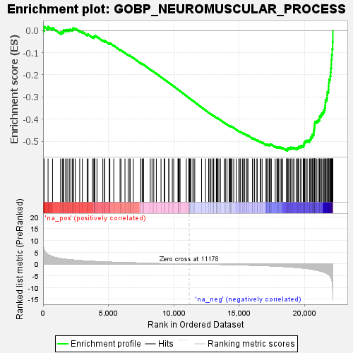
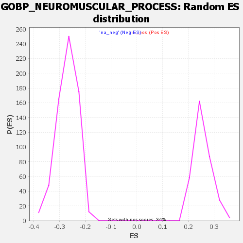

| | | Dataset | deseq_dnfgfr_res_for_gsea |
| Phenotype | NoPhenotypeAvailable |
| Upregulated in class | na_neg |
| GeneSet | GOBP_NEUROMUSCULAR_PROCESS |
| Enrichment Score (ES) | -0.5421305 |
| Normalized Enrichment Score (NES) | -2.0110548 |
| Nominal p-value | 0.0 |
| FDR q-value | 0.009513867 |
| FWER p-Value | 0.039 |
Table: GSEA Results Summary

Fig 1: Enrichment plot: GOBP_NEUROMUSCULAR_PROCESS
Profile of the Running ES Score & Positions of GeneSet Members on the Rank Ordered List
| SYMBOL | RANK IN GENE LIST | RANK METRIC SCORE | RUNNING ES | CORE ENRICHMENT | | 1 | Uba5 | 79 | 6.133 | 0.0173 | No |
| 2 | Zmpste24 | 382 | 3.932 | 0.0170 | No |
| 3 | Hexb | 726 | 3.054 | 0.0118 | No |
| 4 | Get1 | 1342 | 2.239 | -0.0085 | No |
| 5 | Aplp2 | 1474 | 2.138 | -0.0072 | No |
| 6 | Adrb2 | 1559 | 2.062 | -0.0040 | No |
| 7 | Slc1a3 | 1568 | 2.056 | 0.0027 | No |
| 8 | Gm2a | 1726 | 1.950 | 0.0022 | No |
| 9 | Fgf12 | 1837 | 1.880 | 0.0036 | No |
| 10 | Glrb | 1995 | 1.782 | 0.0026 | No |
| 11 | Actn3 | 2054 | 1.751 | 0.0059 | No |
| 12 | Aph1c | 2226 | 1.661 | 0.0038 | No |
| 13 | Pmp22 | 2286 | 1.628 | 0.0067 | No |
| 14 | Vps54 | 2316 | 1.615 | 0.0109 | No |
| 15 | Pten | 2461 | 1.530 | 0.0095 | No |
| 16 | Aph1b | 2803 | 1.394 | -0.0012 | No |
| 17 | Uchl1 | 3005 | 1.314 | -0.0059 | No |
| 18 | Chrne | 3371 | 1.179 | -0.0185 | No |
| 19 | Nrxn1 | 3443 | 1.158 | -0.0178 | No |
| 20 | Tnnt3 | 3774 | 1.053 | -0.0292 | No |
| 21 | Hexa | 3891 | 1.020 | -0.0310 | No |
| 22 | Clic5 | 3894 | 1.020 | -0.0276 | No |
| 23 | Ei24 | 3944 | 1.005 | -0.0264 | No |
| 24 | Cdh23 | 3949 | 1.003 | -0.0231 | No |
| 25 | Ap1s2 | 4123 | 0.958 | -0.0278 | No |
| 26 | Myo7a | 4570 | 0.852 | -0.0451 | No |
| 27 | Ush1g | 4707 | 0.818 | -0.0485 | No |
| 28 | Synm | 4712 | 0.817 | -0.0459 | No |
| 29 | Vps35 | 5065 | 0.736 | -0.0594 | No |
| 30 | Gba | 5094 | 0.731 | -0.0582 | No |
| 31 | Jsrp1 | 5108 | 0.726 | -0.0563 | No |
| 32 | Tnni2 | 5406 | 0.664 | -0.0676 | No |
| 33 | Cln8 | 5889 | 0.576 | -0.0875 | No |
| 34 | Gaa | 5957 | 0.564 | -0.0887 | No |
| 35 | Fabp7 | 6266 | 0.515 | -0.1009 | No |
| 36 | Chrnb1 | 6505 | 0.478 | -0.1101 | No |
| 37 | Prkn | 6647 | 0.458 | -0.1150 | No |
| 38 | App | 6649 | 0.458 | -0.1135 | No |
| 39 | Pafah1b1 | 6901 | 0.422 | -0.1234 | No |
| 40 | Ascl1 | 7471 | 0.343 | -0.1482 | No |
| 41 | Psap | 7484 | 0.342 | -0.1475 | No |
| 42 | Camta1 | 7591 | 0.329 | -0.1512 | No |
| 43 | Npas3 | 7673 | 0.316 | -0.1539 | No |
| 44 | Hoxa1 | 7680 | 0.316 | -0.1531 | No |
| 45 | Chd8 | 8197 | 0.254 | -0.1757 | No |
| 46 | Pomk | 8332 | 0.238 | -0.1810 | No |
| 47 | Tmem150c | 8469 | 0.219 | -0.1864 | No |
| 48 | Spg20 | 8664 | 0.197 | -0.1946 | No |
| 49 | Rcsd1 | 9022 | 0.154 | -0.2103 | No |
| 50 | Cfh | 9263 | 0.140 | -0.2207 | No |
| 51 | Stac | 9306 | 0.136 | -0.2222 | No |
| 52 | Ucn | 9609 | 0.102 | -0.2356 | No |
| 53 | Tnnc1 | 9625 | 0.101 | -0.2359 | No |
| 54 | Slurp1 | 9884 | 0.073 | -0.2474 | No |
| 55 | Grcc10 | 9991 | 0.063 | -0.2520 | No |
| 56 | Kcnab2 | 10319 | 0.031 | -0.2668 | No |
| 57 | Pou4f2 | 10337 | 0.031 | -0.2674 | No |
| 58 | Stac2 | 10399 | 0.024 | -0.2701 | No |
| 59 | Dmd | 10417 | 0.022 | -0.2708 | No |
| 60 | Tcap | 10479 | 0.017 | -0.2736 | No |
| 61 | Chrng | 10953 | 0.004 | -0.2951 | No |
| 62 | Ctnna2 | 11151 | 0.004 | -0.3040 | No |
| 63 | Myh8 | 11174 | 0.001 | -0.3050 | No |
| 64 | Gigyf2 | 11178 | -0.000 | -0.3052 | No |
| 65 | Tnni3 | 11210 | -0.003 | -0.3066 | No |
| 66 | Aldh1a3 | 11271 | -0.011 | -0.3092 | No |
| 67 | Nbn | 11309 | -0.014 | -0.3109 | No |
| 68 | Strit1 | 11459 | -0.029 | -0.3176 | No |
| 69 | Opa3 | 11483 | -0.031 | -0.3185 | No |
| 70 | Pex5 | 11601 | -0.045 | -0.3237 | No |
| 71 | Aars | 12123 | -0.100 | -0.3470 | No |
| 72 | Igdcc3 | 12428 | -0.108 | -0.3605 | No |
| 73 | Fxn | 12661 | -0.129 | -0.3706 | No |
| 74 | Npas1 | 12752 | -0.139 | -0.3742 | No |
| 75 | Hmx3 | 12839 | -0.150 | -0.3777 | No |
| 76 | Rubie | 12995 | -0.167 | -0.3841 | No |
| 77 | Kbtbd13 | 13017 | -0.170 | -0.3845 | No |
| 78 | Cln3 | 13056 | -0.175 | -0.3856 | No |
| 79 | Tcf15 | 13248 | -0.198 | -0.3937 | No |
| 80 | Spr | 13255 | -0.198 | -0.3933 | No |
| 81 | Mecp2 | 13312 | -0.206 | -0.3951 | No |
| 82 | Glra1 | 13350 | -0.210 | -0.3961 | No |
| 83 | Atp2a1 | 13447 | -0.222 | -0.3997 | No |
| 84 | Pou4f3 | 13567 | -0.225 | -0.4043 | No |
| 85 | Chrna1 | 13859 | -0.257 | -0.4167 | No |
| 86 | Grin2a | 13944 | -0.267 | -0.4196 | No |
| 87 | Clrn1 | 14067 | -0.283 | -0.4242 | No |
| 88 | Nr4a3 | 14238 | -0.305 | -0.4309 | No |
| 89 | Bloc1s4 | 14272 | -0.309 | -0.4313 | No |
| 90 | Grin3a | 14311 | -0.315 | -0.4320 | No |
| 91 | Tifab | 14320 | -0.318 | -0.4313 | No |
| 92 | Slitrk6 | 14376 | -0.327 | -0.4327 | No |
| 93 | Tnnc2 | 14450 | -0.337 | -0.4348 | No |
| 94 | Stra6 | 14581 | -0.353 | -0.4395 | No |
| 95 | Abr | 14779 | -0.374 | -0.4472 | No |
| 96 | Grid2 | 14965 | -0.405 | -0.4543 | No |
| 97 | Slc8a3 | 15060 | -0.422 | -0.4571 | No |
| 98 | Nefl | 15112 | -0.429 | -0.4580 | No |
| 99 | Ush1c | 15260 | -0.450 | -0.4631 | No |
| 100 | Rac3 | 15335 | -0.463 | -0.4649 | No |
| 101 | Myh3 | 15425 | -0.477 | -0.4673 | No |
| 102 | Csmd1 | 15589 | -0.503 | -0.4730 | No |
| 103 | Bace1 | 15601 | -0.505 | -0.4718 | No |
| 104 | Comp | 15674 | -0.515 | -0.4733 | No |
| 105 | Parp1 | 16025 | -0.569 | -0.4873 | No |
| 106 | Ccdc78 | 16031 | -0.570 | -0.4856 | No |
| 107 | Casq1 | 16177 | -0.596 | -0.4901 | No |
| 108 | Tshz3 | 16365 | -0.628 | -0.4965 | No |
| 109 | Kcnh1 | 16371 | -0.629 | -0.4946 | No |
| 110 | Vti1a | 16603 | -0.673 | -0.5028 | No |
| 111 | Homer1 | 16638 | -0.678 | -0.5020 | No |
| 112 | Gch1 | 16753 | -0.700 | -0.5048 | No |
| 113 | Agtpbp1 | 17062 | -0.764 | -0.5162 | No |
| 114 | Foxs1 | 17067 | -0.765 | -0.5138 | No |
| 115 | Mtor | 17140 | -0.783 | -0.5144 | No |
| 116 | Neurog1 | 17281 | -0.815 | -0.5180 | No |
| 117 | Cntnap2 | 17324 | -0.824 | -0.5171 | No |
| 118 | Drd1 | 17341 | -0.828 | -0.5150 | No |
| 119 | Scn1a | 17382 | -0.836 | -0.5140 | No |
| 120 | Myh14 | 17459 | -0.856 | -0.5145 | No |
| 121 | Fgf14 | 17755 | -0.936 | -0.5247 | No |
| 122 | Tnni1 | 17883 | -0.971 | -0.5272 | No |
| 123 | Myo5a | 17954 | -0.988 | -0.5270 | No |
| 124 | Tpp1 | 18015 | -1.002 | -0.5263 | No |
| 125 | Xrcc1 | 18134 | -1.038 | -0.5282 | No |
| 126 | Rest | 18228 | -1.069 | -0.5287 | No |
| 127 | Icmt | 18327 | -1.104 | -0.5294 | No |
| 128 | Tnnt1 | 18607 | -1.198 | -0.5380 | Yes |
| 129 | Ptprq | 18696 | -1.235 | -0.5378 | Yes |
| 130 | Kcnma1 | 18721 | -1.241 | -0.5347 | Yes |
| 131 | Mycbp2 | 18740 | -1.248 | -0.5312 | Yes |
| 132 | Kcnj2 | 18826 | -1.273 | -0.5308 | Yes |
| 133 | Scn4a | 18940 | -1.321 | -0.5314 | Yes |
| 134 | Grin2b | 18961 | -1.332 | -0.5278 | Yes |
| 135 | Pcdh15 | 19112 | -1.395 | -0.5298 | Yes |
| 136 | Ighmbp2 | 19188 | -1.421 | -0.5284 | Yes |
| 137 | Rbfox2 | 19359 | -1.500 | -0.5310 | Yes |
| 138 | Pou4f1 | 19454 | -1.550 | -0.5300 | Yes |
| 139 | Atxn2 | 19537 | -1.592 | -0.5283 | Yes |
| 140 | Atp2b2 | 19552 | -1.604 | -0.5235 | Yes |
| 141 | Stac3 | 19706 | -1.684 | -0.5247 | Yes |
| 142 | Pde8b | 19721 | -1.691 | -0.5195 | Yes |
| 143 | Dctn1 | 19894 | -1.791 | -0.5212 | Yes |
| 144 | Mylk2 | 19933 | -1.807 | -0.5168 | Yes |
| 145 | Ankfn1 | 19956 | -1.818 | -0.5116 | Yes |
| 146 | Dvl1 | 19987 | -1.831 | -0.5067 | Yes |
| 147 | Kcna1 | 20013 | -1.851 | -0.5015 | Yes |
| 148 | Hipk2 | 20097 | -1.899 | -0.4988 | Yes |
| 149 | Tnr | 20197 | -1.960 | -0.4966 | Yes |
| 150 | Herc1 | 20371 | -2.084 | -0.4974 | Yes |
| 151 | Penk | 20403 | -2.114 | -0.4916 | Yes |
| 152 | Myh7 | 20471 | -2.182 | -0.4872 | Yes |
| 153 | Nlgn3 | 20503 | -2.211 | -0.4811 | Yes |
| 154 | Nr4a1 | 20581 | -2.283 | -0.4768 | Yes |
| 155 | Slc6a3 | 20598 | -2.302 | -0.4696 | Yes |
| 156 | Dlg4 | 20700 | -2.399 | -0.4660 | Yes |
| 157 | Rbfox1 | 20707 | -2.408 | -0.4581 | Yes |
| 158 | Ednra | 20711 | -2.411 | -0.4500 | Yes |
| 159 | Itpr1 | 20749 | -2.464 | -0.4433 | Yes |
| 160 | Dbn1 | 20755 | -2.474 | -0.4351 | Yes |
| 161 | Shank1 | 20776 | -2.495 | -0.4275 | Yes |
| 162 | Atp8a2 | 20780 | -2.501 | -0.4191 | Yes |
| 163 | Cntnap1 | 20800 | -2.524 | -0.4113 | Yes |
| 164 | Cacna1a | 20935 | -2.675 | -0.4083 | Yes |
| 165 | Nkx6-2 | 21052 | -2.817 | -0.4039 | Yes |
| 166 | Adarb1 | 21148 | -2.948 | -0.3982 | Yes |
| 167 | Grin2c | 21149 | -2.949 | -0.3881 | Yes |
| 168 | Abl2 | 21235 | -3.044 | -0.3816 | Yes |
| 169 | Dmpk | 21316 | -3.196 | -0.3743 | Yes |
| 170 | Drd2 | 21414 | -3.365 | -0.3673 | Yes |
| 171 | Abl1 | 21486 | -3.496 | -0.3586 | Yes |
| 172 | Gpr88 | 21547 | -3.607 | -0.3490 | Yes |
| 173 | Cav3 | 21574 | -3.661 | -0.3377 | Yes |
| 174 | Prrt2 | 21589 | -3.709 | -0.3256 | Yes |
| 175 | Camk2b | 21603 | -3.757 | -0.3134 | Yes |
| 176 | Myh10 | 21704 | -4.034 | -0.3042 | Yes |
| 177 | Jph3 | 21729 | -4.122 | -0.2912 | Yes |
| 178 | Grin1 | 21738 | -4.158 | -0.2774 | Yes |
| 179 | Grin2d | 21828 | -4.505 | -0.2660 | Yes |
| 180 | Bcr | 21839 | -4.555 | -0.2509 | Yes |
| 181 | Gbx1 | 21850 | -4.585 | -0.2358 | Yes |
| 182 | Adora2a | 21874 | -4.675 | -0.2208 | Yes |
| 183 | Pnkd | 21961 | -5.232 | -0.2069 | Yes |
| 184 | Adcy5 | 21990 | -5.502 | -0.1894 | Yes |
| 185 | Map1a | 22013 | -5.718 | -0.1709 | Yes |
| 186 | Drd3 | 22045 | -6.120 | -0.1514 | Yes |
| 187 | Jph4 | 22048 | -6.164 | -0.1304 | Yes |
| 188 | Shank3 | 22081 | -6.739 | -0.1089 | Yes |
| 189 | Sox2 | 22115 | -7.768 | -0.0839 | Yes |
| 190 | Nlgn2 | 22148 | -9.797 | -0.0519 | Yes |
| 191 | Otof | 22164 | -15.398 | 0.0000 | Yes |
Table: GSEA details [plain text format]

Fig 2: GOBP_NEUROMUSCULAR_PROCESS: Random ES distribution
Gene set null distribution of ES for GOBP_NEUROMUSCULAR_PROCESS